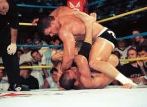
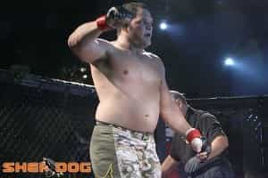
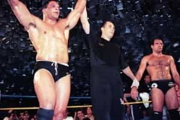

< < < Back
5 Hard Lessons From The Downfall Of MMA Pioneer Mark Kerr – Return Of Kings
Today’s article is something I’ve never done before on this site: it’s a film review-and more accurately, the lessons that can be learned from this film. The Smashing Machine is a documentary about a specific person, a person that is very well known to old-school Mixed Martial Arts fans. For the other 90% of the readers, allow me to introduce you to Mark Kerr (he’s the featured image), two-time UFC champion and, for the majority of the Clinton years, probably the most terrifying human being on the planet.
A former collegiate wrestler, Mark Kerr entered the fledgling sport of MMA during it’s “outlaw” years, quickly establishing himself as a name fighting in both Brazil (winning the World Vale Tudo Championship ’97 with a broken hand, palm-striking his way to victory in a tournament where one of his opponents actually tried to run from the ring), the UAE (winning the Abu Dhabi Combat Championships gold medal thrice) and the USA (Winning the UFC 14 and 15 tournaments later that same year).

Within four years, Mark Kerr’s career and life would enter a precipitous downfall that he has not yet recovered from—his previously undefeated record quickly amassed 11 losses, and his Herculean physique quickly atrophied into what can only be described as a dad bod.

How could this negative change have occurred so quickly? The 2002 documentary The Smashing Machine elucidates, and provides “copybook heading” lessons for both the professional and amateur athlete, as well as men in general.
1. Fighting and competition can both create and destroy you

The opening narration, from the subject of the documentary, offers immediate corroboration:
The second the bell rings, you can look at some guys and see they’re terrified…I developed the reaction to be angry at a punch, to want to get them back, instead of running away…when you feel a man wither away, it’s pretty powerful.
You start out having fun, having this animal instant take over. And then you’re left holding nothing-at that point, you ask me why I’m in it, and I didn’t know.
The film goes on to explain that fighting in vale tudo started out as a necessity for him. As a former collegiate wrestler, there wasn’t much employment available for his skill set. Having decided on this career path, Mark spends the weeks leading up to his debut (the Brazilian tournament) in a state of mild terror, before this anxiety melts away as soon as the bell rings, projecting itself onto his opponents.
I, of course, am not a professional fighter, nor have I ever been. But, having done a couple of amateur fights, a few unsanctioned fights, and many a spar, I can indeed confirm that this sort of emotional mixture is typical. No matter how many times you fight, you will be nervous before a fight that is “for real,” your amygdala and adrenaline glands will take over and produce a low burn of anger in the midst of the fight, and you will experience either a massive high or an abyssal low afterwards, depending on whether you won or lost. I can only imagine how amplified these effects would be in front of a crowd of 30,000 people.
The emotional turmoil of combat can catch many unprepared (I’ve personally seen people who win fights vomit afterwards, due to the sheer stress of it all), and this leads to the second lesson to be learned:
2. Emotional strength is just as useful as physical strength, if not more so
The documentary starts off with very stark, minimalist music, non-verbally telling you that this won’t be a very happy film. Indeed, a major theme of the film is Kerr’s emotional fragility, in marked contrast to his monstrous physical ability.
The term “emotionally fragile” should not be taken to mean “cowardice.” It should be reiterated that in his debut as a shootfighter, Mark Kerr won an eight-man tournament, beating three men in one night, the last of these in a 30 minute slog with a broken hand. These are plainly not the actions of a coward.
Oddly, it is only after this tournament that we begin to see cracks in his mighty facade: he admits that he starts to feel apprehension after recovering from his injury “…so to take the edge off, you take the shit you don’t want to do,” utilizing painkillers before matches to boost his pain tolerance. It’s worth pointing out that 1990s MMA had, essentially, no drug testing at all, and Kerr was hardly unique in this.
Arguably more damaging to his career than his fear of injury was his emotional neediness—early on, it is established that he is estranged from his family, and is emotionally supported only by his girlfriend Dawn: “If our relationship doesn’t exist… on some level, I don’t have any family.” But as the film goes on, it’s clear that their relationship is not so clean-cut.
3. Women can hurt you and distract you from your purpose
This is, of course, something that most of us on this web site are well aware of, but this documentary shows one of the purest examples of it occurring. In the 90 minute running time, we see Dawn admitting that they were out partying and using various controlled substances a week before a fight (which ultimately ended up being his first loss, later ruled a no-contest), before she essentially admits that her drug use is enabling her boyfriend.
Furthermore, later in the film she exposes her own jealousy and clinginess towards Mark: “He needs me bad, and now there’s a lot of influences in his life other than me, and it’ll require patience from me. Because I’m jealous at times…my biggest fear, now that he’s sober, is having him not love me anymore.”
Note that at no point in this talking head segment does she voice concern about her boyfriend who, let me remind you, is a drug-addicted emotional trainwreck who is also a professional fighter that, in his own words, needs the help: “I want somebody to be there with me, not at the high, but at the depression.”
Eventually, Mark breaks up with her after an incident where she holds a gun at him while slashing her arms with a razor, and tries to get back on the right track. But the road ahead of him is long.
4. Use drugs sparingly, and needles never

This one needs little explanation: This film shows plenty of the ill effects of drug use: potential overdose, exacerbation of mental issues, and eventual dad bod. While I admit I’m no pharmacologist—the hardest drug I’ve ever done was shrooms—it seems to me that injected drugs in general, and opiates in particular, will end up leading you to ruin in the long run. It certainly seems more likely that this hurt him more than the alcohol use he and Dawn are shown occasionally doing in the film’s run.
5. “The best laid schemes of mice and men”
It seems for a time that Mark is making a comeback: he has broken away from the toxic effects of his girlfriend, he’s gotten back into training seriously, and he appears ready for the Pride FC 2000 Grand Prix. Ultimately, he loses in the quarterfinals.
While I have always said that improvement can be made with effort, unfortunately, sometimes you can still fail due to some outside circumstances: in this case, exhausting himself against Kazuyuki Fujita and his Homer Simpson-esque skull. Bitterly humorous is the fact that the tournament does indeed serve as a redemption and comeback…but for somebody else, namely Kerr’s mentor and training partner Mark Coleman, who gets about 20 minutes of screen time and, essentially, serves as a foil to Kerr.
The last image of the film is of Kerr’s eyes, filled with anger and disappointment, before closing to black. A caption informs us that he and Dawn have gotten married. Since then, his former 11-0 record has become 15-11, last fighting in 2009.
No matter where you are in your physical training, from a total novice to a professional athlete, realize that, like the triumphant Roman would have whispered in his ear, you are mortal, and no matter how physically strong you are, your emotions, your thumos, can destroy you. While there are many ways to control your emotions, realizing the danger they represent is one of the most difficult conflicts any man can face.
The film featured in this article presents a man who is, frankly, more of a man than anybody reading this article, including myself, and who nonetheless lost that battle.
Read More: How Cinderella Shows The Harsh Realities Of The Sexual Marketplace